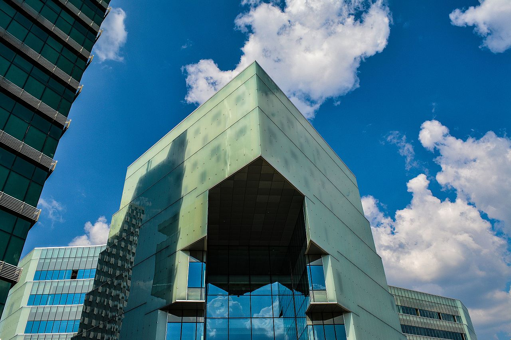

Economia
Fiind capitala tarii, Tirana este inima economică a Albaniei și casa pentru majoritatea companiilor naționale și internaționale majore care operează în țară. Economia este dominată de sectorul serviciilor cu aproximativ 68,5%, sectorul industrial cu 26,1% și sectorul agricol cu 5,4%. Orașul a început să se dezvolte la începutul secolului al XVI-lea, când a fost înființat un bazar, iar meseriașii săi au fabricat materiale de mătase, bumbac, piele, ceramică și fier, argint și artefacte de aur.
Din punct de vedere istoric, după cel de-al doilea război mondial și regimul comunist, orașul și zonele înconjurătoare s-au extins rapid și au devenit regiunea cea mai puternic industrializată din Albania. Sectoarele economice importante din Tirana includ transportul, tehnologiile informației și comunicațiilor, mediul, publicitatea și designul, serviciile de mediu, construcțiile, comerțul electronic, serviciile bancare, serviciile juridice, comerțul cu amănuntul, hotelul și ingineria medicală.
Potrivit Băncii Mondiale, Tirana a făcut pași importanți pentru începerea unei afaceri în 2016, ocupând locul 10 printre cele 22 de orașe din sud-estul Europei.
Copyright © November 2018 - All Rights Reserved - CEI 4 FANTASTICI